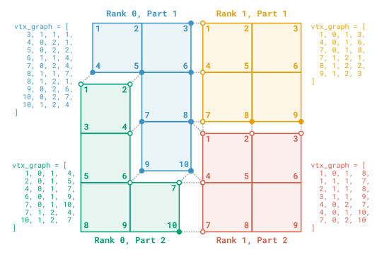

Part Comm Graph¶
Part Comm Graph is a service for managing inter-partition communications between arbitrary entities.
This service does not rely on global IDs, and instead uses addresses based on local indexing.
Concepts¶
Communication graph¶
The communication graph can be described by a list of pairs of connected entities (one local and one remote). Each pair is described by the addresses of the connected entities in the form of a quadruplet, each composed of
the (1-based) local ID of the local entity,
the (0-based) rank of the connected process,
the (1-based) connected partition in the connected process,
the connected remote entity’s (1-based) local ID in the connected part of the connected process (can be signed to encode relative orientation).
A visual example of such a graph is shown below, where the entities of interest are the vertices of a mesh partitioned over two processes (with MPI ranks 0 and 1), each decomposed into 2 partitions. Note that Part Comm Graph can be used with any type of entity, including (but not limited to) mesh entities.
{kind=link}

Note
Entities connected to more than one entities appear multiple times in their local part of the graph (e.g., vertex 8 in rank 0, part 1). Also, the communication graph is undirected and must therefore be symmetric (otherwise, an error is returned when creating the Part Comm Graph instance).
From this description of the communication graph, Part Comm Graph builds internal data structures to ease communications between entities connected in the graph. Multiple modes of communication are available (see the Exchange data dropdown in the API section below).
Owner status¶
For each connected component of the graph, a single entity is flagged as owner (not to be confused with memory ownership!). This status is determined automatically at the creation of the Part Comm Graph instance, and can be used in algorithms that require inter-partition synchronizations for example. In the example above, the owner vertices are represented by solid dots, and the “ghost” vertices by circles.
Usage¶
Reduction
Basic reduction operations (min, max, sum) can be performed easily with the allreduce function, enabling data synchronization between partitions.
Reduction of data defined for the whole partition
Let’s consider a scalar field defined for all vertices, as illustrated below. Switch tabs to visualize the result of the various reduction operations.
(Note that allreduce is not limited to scalar fields and also supports constant-stride fields with interlaced components.)
{kind=link}
{kind=link}
{kind=link}
{kind=link}
Reduction of data defined only for the graph entities
Let’s consider a scalar field defined only for the vertices in the graph, as illustrated below. Switch tabs to visualize the result of the various reduction operations.
(Note that allreduce is not limited to scalar fields and also supports constant-stride fields with interlaced components.)
{kind=link}
{kind=link}
{kind=link}
{kind=link}
General data exchange
Data exchanges can also be performed in multiple ways for more involved computations. Since the communication graph is symmetric, data can naturally be exchanged in both directions within a single exchange, meaning that each graph entity sends and receives data simultaneously. Exchange of data with constant or variable stride is supported, using either blocking, non-blocking or persistent communications.
Under the hood, Part Comm Graph relies on the Exchange Helper structure to manage these exchanges.
Advanced usage
Todo
More advanced features will be documented in a future release:
Advanced exchanges (raw, one-way)
Local reordering of graph entities
Concatenation, splitting and filtering
Creation from pcg_entity1 + entity1_to_entity2 connectivity
Integration with other ParaDiGM features¶
The Part Mesh Nodal data structure can hold Part Comm Graph instances for 0, 1, 2 and 3D mesh elements, as well as for vertices. A mesh partitioned using Multipart and retrieved in the form of a Part Mesh Nodal comes with ready-to-use Part Comm Graph instances.
API¶
Initialization
A Part Comm Graph is created by providing the array describing the communication graph, as described above.
Additional information can be provided by means of a n-uplet of integers for each graph entity.
-
PDM_part_comm_graph_t *PDM_part_comm_graph_create(int n_part, int *pn_entity_graph, int **pentity_graph, PDM_ownership_t ownership, PDM_MPI_Comm comm)¶
Build a PDM_part_comm_graph_t instance.
- Parameters:
n_part – [in] Number of partitions on current process
pn_entity_graph – [in] Number of graph entities (size =
n_part)pentity_graph – [in] Inter-partition communication graph description (size = 4 *
pn_entity_graph[i_part]) : For each entity :Entity local ID (1-based)
Rank of the connected process (0-based)
Connected partition on the connected process (1-based)
Connected entity’s local ID in the connected partition (1-based)
ownership – [in] Ownership for
pentity_graphcomm – [in] MPI communicator
- Returns:
Initialized PDM_part_comm_graph_t instance
-
PDM_part_comm_graph_t *PDM_part_comm_graph_with_nuplet_create(int n_part, int *pn_entity_graph, int **pentity_graph, PDM_ownership_t ownership_graph, int nuplet_size, int **pentity_nuplet, PDM_ownership_t ownership_nuplet, PDM_bool_t is_signed, PDM_MPI_Comm comm)¶
Build a PDM_part_comm_graph_t instance using additional information represented as a n-uplet.
- Parameters:
n_part – [in] Number of partitions on current process
pn_entity_graph – [in] Number of graph entities (size =
n_part)pentity_graph – [in] Inter-partition communication graph description (size = 4 *
pn_entity_graph[i_part]) : For each entity :Entity local ID (1-based)
Rank of the connected process (0-based)
Connected partition on the connected process (1-based)
Connected entity’s local ID in the connected partition (1-based)
ownership_graph – [in] Ownership for
pentity_graphnuplet_size – [in] N-uplet size
pentity_nuplet – [in] Additional nuplets (size =
nuplet_size*pn_entity_graph[i_part])ownership_nuplet – [in] Ownership for
pentity_nupletis_signed – [in] Use signed nuplets?
comm – [in] MPI communicator
- Returns:
Initialized PDM_part_comm_graph_t instance
- subroutine pdm_part_comm_graph_create(pcg, n_part, pn_entity_graph, pentity_graph, ownership_graph, comm[, nuplet_size[, pentity_nuplet[, ownership_nuplet[, is_signed]]]])¶
Build a Part Comm Graph instance.
Additional (optional) information represented as a n-uplet can be provided. If so, the arguments
nuplet_size,pentity_nuplet,ownership_nupletandis_signedmust be given.- Parameters:
pcg [c_ptr,out] :: Part Comm Graph instance
n_part [integer,in] :: Number of parts on current process
pn_entity_graph (*) [integer,in,pointer] :: Number of graph entities (size =
n_part)pentity_graph [pdm_pointer_array_t,in,pointer] :: Inter-partition communication graph description (size =
4*pn_entity_graph)ownership_graph [integer,in] :: Ownership for
pentity_graphcomm [integer,in] :: MPI communicator
nuplet_size [integer,in,] :: N-uplet size (optional)
pentity_nuplet [pdm_pointer_array_t,in,pointer] :: Additional nuplets (optional, size =
nuplet_size * pn_entity_graph)ownership_nuplet [integer,in,] :: Ownership for
pentity_nuplet(optional)is_signed [logical,in,] :: Use signed nuplets? (optional)
- class PartCommGraph¶
- __init__(comm, pentity_graph, pentity_nuplet=None, is_signed=True)¶
Create a new
PartCommGraphinstance- Parameters:
comm (MPI.Comm) – MPI communicator
pentity_graph (list of np.ndarray[np.int32]) – Inter-partition communication graph description (size =
4 * pn_entity_graph[i_part])pentity_nuplet (list of np.ndarray[np.int32], optional) – Additional nuplets (size =
nuplet_size * pn_entity_graph[i_part])is_signed (bool, optional) – Use signed nuplets
Access to internal structure
-
int PDM_part_comm_graph_n_entity_get(PDM_part_comm_graph_t *pcg, int i_part)¶
Get number of graph entities.
- Parameters:
pcg – [in] Pointer to PDM_part_comm_graph_t instance
i_part – [in] Partition identifier
- Returns:
Number of graph entities
-
int PDM_part_comm_graph_entity_graph_get(PDM_part_comm_graph_t *pcg, int i_part, int **entity_graph, PDM_ownership_t ownership)¶
Get the communication graph description for a local partition.
- Parameters:
pcg – [in] Pointer to PDM_part_comm_graph_t instance
i_part – [in] Partition identifier
entity_graph – [out] Entity graph (size = 4 * n_entity_graph)
ownership – [in] Ownership for
entity_graph
- Returns:
Number of entities in graph in current partition
-
const int *PDM_part_comm_graph_owner_get(PDM_part_comm_graph_t *pcg, int i_part)¶
Get the owner status of local graph entities (read-only)
- Parameters:
pcg – [in] PDM_part_comm_graph_t instance
i_part – [in] Id of current partition
- Returns:
Owner status (1 if owner, 0 if not owner, size =
n_entity_graph)
-
int PDM_part_comm_graph_nuplet_size(PDM_part_comm_graph_t *pcg)¶
Get nuplet size.
- Parameters:
pcg – [in] Pointer to PDM_part_comm_graph_t instance
- Returns:
Size of nuplet
-
int PDM_part_comm_graph_entity_nuplet_get(PDM_part_comm_graph_t *pcg, int i_part, int **entity_nuplet, PDM_ownership_t ownership)¶
Get entity nuplets.
- Parameters:
pcg – [in] Pointer to PDM_part_comm_graph_t instance
i_part – [in] Partition identifier
entity_nuplet – [out] Entity nuplets (size = nuplet_size * n_entity_graph)
ownership – [in] Ownership for
entity_nuplet
- Returns:
Size of nuplet
- function pdm_part_comm_graph_n_entity_get(pcg, i_part)¶
Get number of graph entities
- Parameters:
pcg [c_ptr,in] :: Part Comm Graph instance
i_part [integer,in] :: Partition identifier
- Return:
n_entity [integer] :: Number of graph entities
- subroutine pdm_part_comm_graph_entity_graph_get(pcg, i_part, entity_graph, ownership)¶
Get the communication graph description for a local partition
- Parameters:
pcg [c_ptr,in] :: Part Comm Graph instance
i_part [integer,in] :: Partition identifier
entity_graph (*) [integer,out,pointer] :: Entity graph (size =
4 * n_entity_graph)ownership [integer,in] :: Ownership
- subroutine pdm_part_comm_graph_owner_get(pcg, i_part, is_owner)¶
Get the owner status of local graph entities (read-only)
- Parameters:
pcg [c_ptr,in] :: Part Comm Graph instance
i_part [integer,in] :: Partition identifier
is_owner (*) [integer,out,pointer] :: Owner status (1 if owner, 0 if not owner, size =
n_entity_graph)
- function pdm_part_comm_graph_nuplet_size(pcg)¶
Get nuplet size
- Parameters:
pcg [c_ptr,in] :: Part Comm Graph instance
- Return:
size :: Size of nuplet
- subroutine pdm_part_comm_graph_entity_nuplet_get(pcg, i_part, entity_nuplet, ownership)¶
Get entity nuplets
- Parameters:
pcg [c_ptr,in] :: Part Comm Graph instance
i_part [integer,in] :: Partition identifier
entity_nuplet (*) [integer,out,pointer] :: Entity nuplets (size = nuplet_size * n_entity_graph)
ownership [integer,in] :: Ownership
- PartCommGraph.entity_graph_get(i_part)¶
Get the communication graph description for a local partition
- Parameters:
i_part (int) – Partition identifier
- Returns:
- For each entity :
Entity local ID (1-based)
Rank of the connected process (0-based)
Connected partition on the connected process (1-based)
Connected entity’s local ID in the connected partition (1-based)
- Return type:
Inter-partition communication graph description (np.array[np.int32] of size
4 * n_entity_graph)
- PartCommGraph.owner_get(i_part)¶
Get the owner status of local graph entities (read-only)
- Parameters:
i_part (int) – Partition identifier
- Returns:
Owner status (1 if owner, 0 if not owner) (np.array[np.int32] of size n_entity_graph)
Reduction operations
-
void PDM_part_comm_graph_allreduce(PDM_part_comm_graph_t *pcg, PDM_MPI_Datatype datatype, int stride, PDM_MPI_Op op, PDM_bool_t data_def_graph, unsigned char **data)¶
Perform a reduction operation on constant-stride data. The data can be defined either for only the entities connected in the graph, or the whole partition. The reduction is performed in place.
Warning
Only
PDM_MPI_DOUBLEandPDM_MPI_INTdata types are supported. OnlyPDM_MPI_SUM,PDM_MPI_MINandPDM_MPI_MAXoperations are supported.- Parameters:
pcg – [in] Pointer to PDM_part_comm_graph_t instance
datatype – [in] Data type (
PDM_MPI_DOUBLE/PDM_MPI_INT)stride – [in] Constant stride value
op – [in] Reduction operation (
PDM_MPI_SUM/PDM_MPI_MIN/PDM_MPI_MAX)data_def_graph – [in] Is the data defined only for the graph entities?
data – [inout] Data to reduce
- subroutine pdm_part_comm_graph_allreduce(pcg, stride, op, data_def_graph, data)¶
Perform a reduction operation on constant-stride data. The data can be defined either for only the entities connected in the graph, or the whole partition. The reduction is performed in place.
Warning
Only
real(8)andinteger(4)data types are supported. OnlyMPI_SUM,MPI_MINandMPI_MAXoperations are supported.- Parameters:
pcg [c_ptr,in] :: Part Comm Graph instance
stride [integer,in] :: Constant stride value
op [integer,in] :: Reduction operation (
MPI_SUM/MPI_MIN/MPI_MAX)data_def_graph [logical,in] :: Is the data defined only for the graph entities?
data [pdm_pointer_array_t,pointer] :: Data to reduce
- Use :
mpi
- PartCommGraph.allreduce(stride, op, data_def_graph, data)¶
Perform a reduction operation on constant-stride data. The data can be defined either for only the entities connected in the graph, or the whole partition. The reduction is performed in place.
Warning
Only
np.doubleandnp.int32data types are supported. OnlyMPI.SUM,MPI.MINandMPI.MAXoperations are supported.- Parameters:
stride (int) – Constant stride value
op (MPI.Op) – Reduction operation (
MPI.SUM/MPI.MIN/MPI.MAX)data_def_graph (bool) – Is the data defined only for the graph entities?
data (list of np.ndarray) – Data to reduce
Exchange data
Blocking communications
-
void PDM_part_comm_graph_exch(PDM_part_comm_graph_t *pcg, size_t s_data, PDM_stride_t t_stride, int cst_stride, int **send_entity_stride, void **send_entity_data, int ***recv_entity_stride, void ***recv_entity_data)¶
Exchange data using two-way blocking communications. Each graph entity sends and receives data.
Warning
Interleaved data ( PDM_STRIDE_CST_INTERLEAVED) is not supported yet
- Parameters:
pcg – [in] PDM_part_comm_graph_t instance
s_data – [in] Data size
t_stride – [in] Kind of stride (see PDM_stride_t)
cst_stride – [in] Constant stride value
send_entity_stride – [in] Stride of send data
send_entity_data – [in] Send data
recv_entity_stride – [out] Stride of recv data
recv_entity_data – [out] Recv data
- subroutine pdm_part_comm_graph_exch(pcg, t_stride, cst_stride, send_stride, send_data, recv_stride, recv_data)¶
Exchange data using two-way blocking communications. Each graph entity sends and receives data.
Warning
Interleaved data (
PDM_STRIDE_CST_INTERLEAVED) is not supported yet- Parameters:
pcg [c_ptr,in] :: Part Comm Graph instance
t_stride [integer,in] :: Type of stride
cst_stride [integer,in] :: Constant stride value
send_stride [pdm_pointer_array_t,pointer] :: Stride of send data
send_data [pdm_pointer_array_t,pointer] :: Send data
recv_stride [pdm_pointer_array_t,pointer] :: Stride of recv data
recv_data [pdm_pointer_array_t,pointer] :: Recv data
- PartCommGraph.exch(send_entity_data, send_entity_stride=1, interlaced_str=True)¶
Exchange data using two-way blocking communications. Each graph entity sends and receives data.
Warning
Interleaved data is not supported yet
- Parameters:
send_entity_data (list of np.ndarray) – Data to send
send_entity_stride (int or list of np.ndarray[np.int32], optional) – Stride of send data (default = 1)
interlaced_str (bool, optional) – Is the data interlaced? (default = True)
- Returns :
Recv stride (same dtype as
send_entity_stride)Recv data (list of same dtype as
send_entity_data)
Non-blocking communications
Non-blocking communications with Part Comm Graph follow the same semantics as the MPI standard:
first, the exchange is initiated (
iexch), which opens a request;the communication can then be covered by local computations;
when the received data is required, we wait for the exchange to finish (
wait), which closes the request.
-
int PDM_part_comm_graph_iexch(PDM_part_comm_graph_t *pcg, PDM_mpi_comm_kind_t kcomm, size_t s_data, PDM_stride_t t_stride, int cst_stride, int **send_entity_stride, void **send_entity_data, int ***recv_entity_stride, void ***recv_entity_data)¶
Initiate a two-way non-blocking exchange. Each graph entity sends and receives data.
Note
The exchange must then be finalized using PDM_part_comm_graph_exch_wait .
Warning
Interleaved data (
PDM_STRIDE_CST_INTERLEAVED) is not supported yet- Parameters:
pcg – [in] PDM_part_comm_graph_t instance
kcomm – [in] Kind of MPI communication
s_data – [in] Data size
t_stride – [in] Kind of stride (see PDM_stride_t)
cst_stride – [in] Constant stride value
send_entity_stride – [in] Stride of send data
send_entity_data – [in] Send data
recv_entity_stride – [out] Stride of recv data
recv_entity_data – [out] Recv data
- Returns:
Request id
-
void PDM_part_comm_graph_exch_wait(PDM_part_comm_graph_t *pcg, int request_id)¶
Wait for a non-blocking exchange to finish.
- Parameters:
pcg – [in] PDM_part_comm_graph_t instance
request_id – [in] Request id
- subroutine pdm_part_comm_graph_iexch(pcg, k_comm, t_stride, cst_stride, send_stride, send_data, recv_stride, recv_data, request)¶
Initiate a two-way non-blocking exchange. Each graph entity sends and receives data.
Note
The exchange must then be finalized using PDM_part_comm_graph_exch_wait.
Warning
Interleaved data (
PDM_STRIDE_CST_INTERLEAVED) is not supported yet.- Parameters:
pcg [c_ptr,in] :: Part Comm Graph instance
k_comm [integer,in] :: Kind of MPI communication
t_stride [integer,in] :: Type of stride
cst_stride [integer,in] :: Constant stride value
send_stride [pdm_pointer_array_t,pointer] :: Stride of send data
send_data [pdm_pointer_array_t,pointer] :: Send data
recv_stride [pdm_pointer_array_t,pointer] :: Stride of recv data
recv_data [pdm_pointer_array_t,pointer] :: Recv data
request [integer,out] :: Request ID
- subroutine pdm_part_comm_graph_exch_wait(pcg, request)¶
Wait for a non-blocking (possibly persistent) exchange to finish
- Parameters:
pcg [c_ptr,in] :: Part Comm Graph instance
request [integer,in] :: Request ID
Persistent communications
Persistent communications with Part Comm Graph follow the same semantics as the MPI standard:
first, a persistent request is created (
init);then the request can be used (as many times as necessary) to exchange data using the same send and recv buffers (
start/wait);finally, the persistent request must be freed (
free).
-
int PDM_part_comm_graph_exch_init(PDM_part_comm_graph_t *pcg, PDM_mpi_comm_kind_t kcomm, size_t s_data, PDM_stride_t t_stride, int cst_stride, int **send_stride, void **send_data, int ***recv_stride, void ***recv_data)¶
Open a persistent exchange request.
Warning
Only constant-stride, interlaced data (
PDM_STRIDE_CST_INTERLACED) is currently supported- Parameters:
pcg – [in] PDM_part_comm_graph_t instance
kcomm – [in] Kind of MPI communication
s_data – [in] Data size
t_stride – [in] Kind of stride (see PDM_stride_t)
cst_stride – [in] Constant stride value
send_stride – [in] Stride of send data
send_data – [in] Send data
recv_stride – [out] Stride of recv data
recv_data – [out] Recv data
- Returns:
Request id
- subroutine pdm_part_comm_graph_exch_init(pcg, k_comm, t_stride, cst_stride, send_stride, send_data, recv_stride, recv_data, request)¶
Open a persistent exchange request
Warning
Only constant-stride, interlaced data (
PDM_STRIDE_CST_INTERLACED) is currently supported- Parameters:
pcg [c_ptr,in] :: Part Comm Graph instance
k_comm [integer,in] :: Kind of MPI communication
t_stride [integer,in] :: Type of stride
cst_stride [integer,in] :: Constant stride value
send_stride [pdm_pointer_array_t,pointer] :: Stride of send data
send_data [pdm_pointer_array_t,pointer] :: Send data
recv_stride [pdm_pointer_array_t,pointer] :: Stride of recv data
recv_data [pdm_pointer_array_t,pointer] :: Recv data
request [integer,out] :: Request ID
-
void PDM_part_comm_graph_exch_start(PDM_part_comm_graph_t *pcg, int request_id)¶
Start a two-way non-blocking, persistent exchange. Each graph entity sends and receives data.
Note
The exchange must then be finalized using PDM_part_comm_graph_exch_wait .
- Parameters:
pcg – [in] PDM_part_comm_graph_t instance
request_id – [in] Request id
- subroutine pdm_part_comm_graph_exch_start(pcg, request)¶
Start a non-blocking persistent exchange
Note
The exchange must then be finalized using PDM_part_comm_graph_exch_wait.
- Parameters:
pcg [c_ptr,in] :: Part Comm Graph instance
request [integer,in] :: Request ID
-
void PDM_part_comm_graph_exch_free(PDM_part_comm_graph_t *pcg, int request_id)¶
Free a persistent request.
- Parameters:
pcg – [in] PDM_part_comm_graph_t instance
request_id – [in] Request id
- subroutine pdm_part_comm_graph_exch_free(pcg, request)¶
Free a persistent request
- Parameters:
pcg [c_ptr,in] :: Part Comm Graph instance
request [integer,in] :: Request ID
Finalization
-
void PDM_part_comm_graph_free(PDM_part_comm_graph_t *pcg)¶
Free a PDM_part_comm_graph_t instance.
- Parameters:
pcg – [inout] PDM_part_comm_graph_t instance
- subroutine pdm_part_comm_graph_free(pcg)¶
Free a Part Comm Graph instance
- Parameters:
pcg [c_ptr,inout] :: Part Comm Graph instance
The instance is automatically freed by Python’s garbage collector when it is no longer referenced